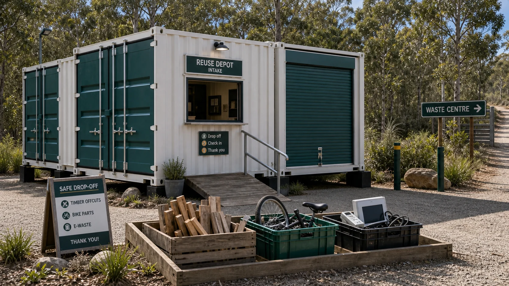

Access
Where could people safely arrive, unload small items, wait, turn around and leave without crossing busy waste traffic?
A lockable container-based sister site near the Straddie waste centre could help useful things find a repair, parts or recycling pathway before they become waste. The starting point is clear: no unauthorised taking from the dump, no unsafe scavenging, and no approval implied.

The safest first version is a pre-tip diversion loop with a supervised intake point and secure after-hours storage. People could offer items before disposal, the project could screen what is useful and safe, and only suitable materials would move into repair, training, deconstruction or proper recycling.
What would need to be true for residents, Council, waste operators and makers to trust a reuse loop before material enters the waste stream?
The concept does not suggest taking items from the waste centre without permission. It asks how a lawful handover, donation, supervised drop-off or approved recovery model could work.
Redland City Council lists the North Stradbroke Island Recycling and Waste Centre at 100 East Coast Road. A practical access question sits beside that: could a safe public transport or shuttle point near Mt Bippo Track, around 200 metres south of the dump, make a reuse loop possible without pushing people into unsafe roadside walking?
Where could people safely arrive, unload small items, wait, turn around and leave without crossing busy waste traffic?
Which items could be triaged quickly as repair, parts, material stock, specialist recycling or no-go?
What needs to be inside a lockable container, behind a roller door, signed out by a steward or kept off the public list?
What simple counts, photos, weights and repair notes would show whether the idea reduces waste and builds skills?
Recent councillor posts reportedly mention possible additional recycling facilities for Straddie. This site treats that as a lead to track, not as confirmed policy, until the exact public post or Council record is linked.
If extra facilities are being discussed, the maker-space can help translate that possibility into practical public questions: what streams are underserved, what should stay with regulated operators, and where could repair or reuse safely happen before disposal?
The strongest streams are ordinary, visible and teachable. They should avoid hazardous, contaminated, privacy-sensitive or high-risk materials unless a qualified partner creates a proper pathway.
Clean offcuts can become shelves, planter boxes, repair jigs, signage, school projects or event furniture.
Safe parts can support basic transport, youth mechanics, spare wheels, baskets, cables and maintenance nights.
Trained triage decides what is repairable, what is parts-only, and what needs certified recycling.
Sturdy pieces can be cleaned, tightened, re-covered, redesigned or used for training before they are thrown away.
Safe scrap can become brackets, hooks, tool holders, garden hardware, art tests or welding practice.
Reusable tubs, buckets, pipes and frames can support Shared Table gardens, preserving days and community events.
The first version can be deliberately small. A simple loop gives people a way to participate without needing to understand the whole system at once.
Offer. A resident or business lists an item before it goes to waste.
Screen. A trained person checks safety, usefulness, storage pressure and permissions.
Divert. Suitable items move to the maker-space, a partner, a reuse shelf or an approved recycling stream.
Repair or recover. The outcome is logged so the public can see what was saved, learned or declined.
Good questions are a form of care. These are the checks that keep the idea realistic, accountable and ready for serious conversations.
Who can authorise diversion, donation, on-site sorting or a nearby sister site?
What supervision, induction, item rules and liability boundaries would be needed?
A bus stop, shuttle, cargo bike, trailer day or collection calendar can make access safer.
What evidence would show the loop is worth a small grant, sponsor trial or Council conversation?
Straddie Tip Loop. Straddie Reclaim Lab. Mt Bippo Reuse Loop. The name can stay plain until the operating model is clearer.
The maker-space could be the repair and learning room. The tip loop could be the lawful material intake question. Tool-sharing and material-offer forms could capture what is available before it becomes waste. Noticeboards and disaster kiosks could publish needs and safe offers. Ready S.E.T. could train people through real tasks. Shared Table could reuse containers and garden infrastructure. Grants Lab could help turn the evidence into support.